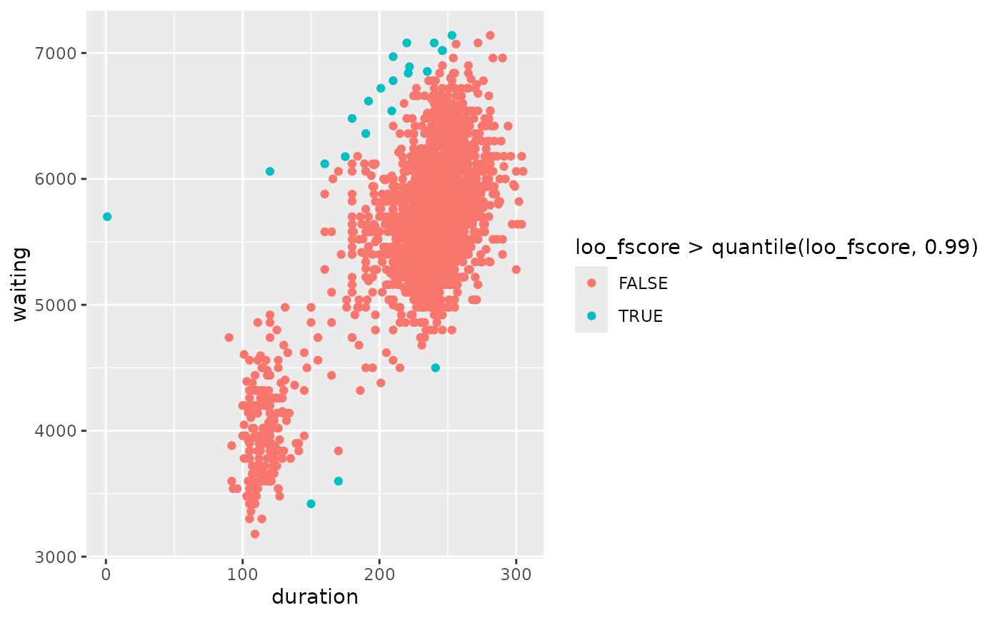

Surprisals computed from a model
Usage
# S3 method for class 'lm'
surprisals(
object,
probability = TRUE,
approximation = c("none", "gpd", "empirical"),
threshold_probability = 0.1,
loo = FALSE,
...
)
# S3 method for class 'gam'
surprisals(
object,
probability = TRUE,
approximation = c("none", "gpd", "empirical"),
threshold_probability = 0.1,
loo = FALSE,
...
)Arguments
- object
- probability
Should surprisal probabilities be computed, or the surprisal values?
- approximation
Character string specifying the approximation to use in computing the surprisal probabilities. Ignored if
probability = FALSE. :nonespecifies that no approximation is to be used;gpdspecifies that the Generalized Pareto distribution should be used; whileempiricalspecifies that the probabilities should be estimated empirically.- threshold_probability
Probability threshold when computing the GPD approximation. This is the probability below which the GPD is fitted. Only used if
approximation = "gpd").- loo
Should leave-one-out surprisals be computed?
- ...
Other arguments are ignored.
Examples
# surprisals computed from linear model
of <- oldfaithful |>
filter(duration < 7200, waiting < 7200)
lm_of <- lm(waiting ~ duration, data = of)
of |>
mutate(
fscore = surprisals(lm_of),
loo_fscore = surprisals(lm_of, loo = TRUE),
# lookout_prob = lookout(surprisals = fscore, loo_scores = loo_fscore)
) |>
ggplot(aes(
x = duration, y = waiting,
color = loo_fscore > quantile(loo_fscore, 0.99)
)) +
geom_point()

# surprisals computed from GAM
of <- oldfaithful |>
filter(duration > 1, duration < 7200, waiting < 7200)
gam_of <- mgcv::gam(waiting ~ s(duration), data = of)
of |>
mutate(fscore = surprisals(gam_of))
#> # A tibble: 2,196 × 4
#> time duration waiting fscore
#> <dttm> <dbl> <dbl> <dbl>
#> 1 2015-01-02 14:53:00 271 5040 0.119
#> 2 2015-01-09 23:55:00 247 6060 0.402
#> 3 2015-02-07 00:49:00 203 5460 0.890
#> 4 2015-02-14 01:09:00 195 5221 0.717
#> 5 2015-02-21 01:12:00 210 5401 0.787
#> 6 2015-02-28 01:11:00 185 5520 0.948
#> 7 2015-03-07 00:50:00 160 5281 0.817
#> 8 2015-03-13 21:57:00 226 6000 0.361
#> 9 2015-03-13 23:37:00 190 5341 0.862
#> 10 2015-03-20 22:26:00 102 3961 0.960
#> # ℹ 2,186 more rows